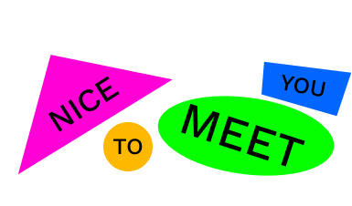

I am a super creative person who fell in love with UX-design. I have always been creatively inclined with music production and graphic design being passions of mine for a long time. What made me apply for the UX-Design programme at IT Högskolan was an UX course by Google.
My goal is to land an entry-level job or participate in a start-up as soon as I am done with my studies... I also love HTML/CSS and designed and coded this website, I would love to talk about the process!
Current: UX-Designer at IT Högskolan Start-date: 2021.08.16. - 2023.05.27
- Userface and prototyping - Course at IT Högskolan
- Agile methods - Course at IT Högskolan
- User-centered Design - Course at IT Högskolan
- Business Benefits of Design - Course at IT Högskolan
Upper Seconday School - NTI Gymnasiet Kronhusgatan - Civil engineering with technical focus - Date: 2016 to 2019